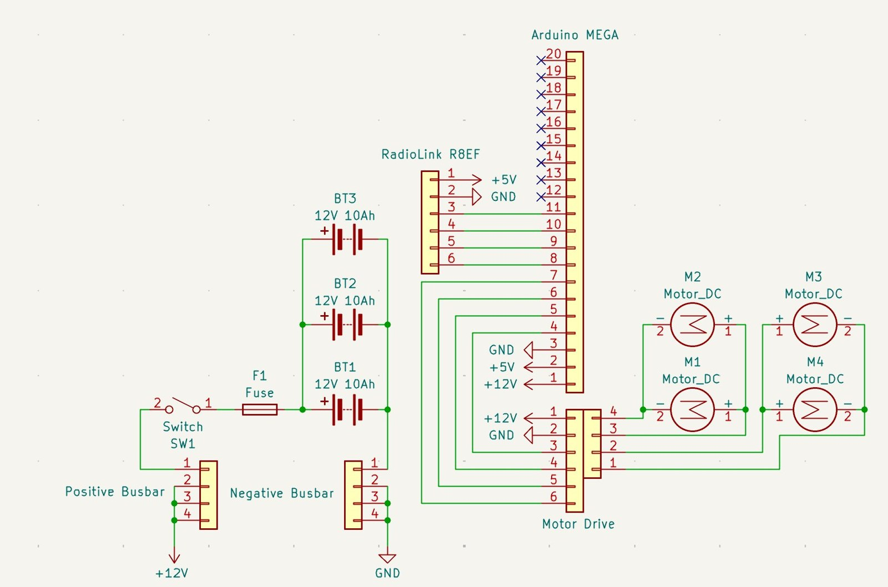

From concept to prototype.
Development milestones and next steps for MCBD 4.0.
From concept selection to detailed subsystem design
Our development process moves from design selection and subsystem analysis toward manufacturing, assembly, and integrated testing.
Requirements & concept selection
Mission and customer requirements established, options compared, and Concept 9 selected through weighted scoring (4.35 / 5).
Subsystem concept and engineering analysis
Detailed CAD designs, magnetic simulations, preliminary structural analyses, electronics architecture, and dynamometer concepts developed across the team.
Refinement and fabrication
Resolve dimensional fit, validate fasteners and materials, refine coupling-force assumptions, and manufacture selected components.
Integrated prototype testing
Measure slip, traction, coupling and decoupling, obstacle traversal, operating time, and dynamometer performance on an assembled system.
Subsystem development in progress
The team is refining component geometry, magnetic coupling, electrical integration, and manufacturing plans in preparation for assembly and performance testing.
